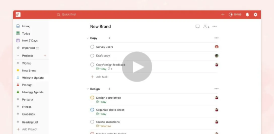

From overwhelmed to on top of it
Taskbit gives you the confidence that everything’s organized and accounted for, so you can make progress on the things that are important to you.

Start each day feeling calm and in control
Get a clear overview of everything on your plate and never lose track of an important task.
- Quick Add
lets you capture and organize tasks in seconds.
- Recurring due dates
lets you capture and organize tasks in seconds.
- Sections & subtasks
lets you capture and organize tasks in seconds.
Focus your energy on the right things
Taskbit surfaces the right tasks at the right times so you always know what to focus on next.
- Priority levels
highlight the day’s most important tasks.
- Favorites
highlight the day’s most important tasks.
- Reminders
highlight the day’s most important tasks.